9. Reading report.html
Step 9 writes one page, <folder>/report.html, with every number and figure of the run. It recomputes nothing: it reads back what steps 1 to 8 wrote. This page goes through it block by block, in the order it appears, using kermadectonga2_v9's report (unsegmented, with step 8): what each block shows, where its numbers come from, and what to look at. A segmented run's report has the same blocks plus a LEVEL 0 section, and a few blocks read differently; those are shown from kermadectonga2_v9seg and listed in Unsegmented or segmented.
.venv/Scripts/python.exe kermadectonga2_v9/steps/step9_report.py # about 10 seconds; re-run after any other step
start kermadectonga2_v9/report.htmlAt a glance
Unsegmented or segmented: what changes on the page
The page is built from the same template in both cases. A segmented run (generate.py ... --segmented true) adds one section and three series on the main chart, and a few blocks then describe a different curve. Everywhere else, the numbers on the page are the unsegmented branch's, the zone as one fault, so they can be read exactly as on an unsegmented run.
| Block | Unsegmented run | Segmented run |
|---|---|---|
| Switch at the top | absent | two tabs, Segmented (this page) and Unsegmented only (report_unsegmented.html, below) |
| Box under the header | green, "UNSEGMENTED RUN" | amber, "SEGMENTED RUN (LEVEL 0)", with the segments and where their boundaries came from |
| Header, steps 1 to 4 | the zone | the same, unchanged |
| Step 5 (earthquakes) | the zone's events | the same card, the zone's events; each segment's own count is in the LEVEL 0 table (step 5 also writes <zone>_gcmt_subset_<segment>.csv) |
| Step 6 (input file) | the zone's Berryman values | the same zone values; each segment's coupling and Mw max observed are in the LEVEL 0 table and the input's segments block |
| Step 7 (logic tree) | the zone | the unsegmented branch; each segment's a range, TVD and total rate are in logic_tree_summary.csv, in rows named ..._<zone>_<segment> (for example prior_posterior_tvd_kermadectonga2_tonga) |
| FILES card | 8 CSVs (with step 8) | also scenario_rates_source_zone.csv (and _official), a segment column in mesh_cells.csv and convergence_profile.csv, and the segment curves in posterior_mean_rate_curve.csv |
| Rate curve | solid line, band, PTHA18 dashed | adds each segment (thin dotted), their union (dashed) and the zone mix (fine dotted). The band is the zone mix's; the solid and PTHA18 dashed lines stay the unsegmented branch |
| LEVEL 0 section | absent | five blocks: how the zone is divided, PTHA18's segments, this run against PTHA18, the segmented curves, what segmenting changed |
| Prior vs posterior, moment balance | the zone | the unsegmented branch. The segments' own figures are in outputs/figures/ (fig_branch_fan_<zone>_<segment>.png ...); segments inherit the zone's edge multiplier, they do not fit their own |
| Full rate table | the zone, against PTHA18's zone | the zone mix, against PTHA18's segmented zone mix |
| This run vs PTHA18 | the zone | the unsegmented branch against PTHA18's unsegmented branch; the rate row says so |
A segmented run has two pages: the switch at the top
A segmented run computes the unsegmented branch in full (it is half of the zone's answer), so step 9 writes it as its own page too: report_unsegmented.html, next to report.html. Both open with a switch, Segmented and Unsegmented only, that goes from one to the other. The unsegmented page is the report an unsegmented run of the zone gives: the same branches, curve and band, against PTHA18's unsegmented branch, with no LEVEL 0 section. Nothing is run twice; the engine only adds the branch's own percentile band (exceedance_rate_percentiles_unsegmented.csv), because the segmented run's band is the zone mix. On kermadectonga2 and kurilsjapan the page differs from <zone>_v9/report.html only in the switch, the box under the title (green, "UNSEGMENTED VIEW OF A SEGMENTED RUN") and the folder name; validate_v9.py unseg_view checks the numbers under it bit for bit. An unsegmented run has one page and no switch.
The box under the title says which kind of run it is
Right under the header, a green box says UNSEGMENTED RUN (every number on the page is the zone's), or an amber box says SEGMENTED RUN (LEVEL 0), lists the segments with their columns and where the boundaries came from, and repeats which blocks describe the unsegmented branch and which the whole zone.
exceedance_rate_union_of_segments). The source zone is the zone's actual answer, half the zone as one fault and half the union: 0.5 x unsegmented + 0.5 x union (exceedance_rate_source_zone). On kermadectonga2_v9seg at Mw 7.2: unsegmented 0.2251, union 0.2790, source zone 0.2521 per year. A hazard study uses the source zone; the union is one of its two halves.kermadectonga2_v9 and kermadectonga2_v9seg). But each segment has its own update, against the earthquakes on its own cells (tonga 3, kermadec 6, hikurangi 0), with its own TVD in logic_tree_summary.csv and its own figure fig_branch_fan_<zone>_<segment>.png. A segment with no earthquakes is updated too: seeing none in 41 years rules out the branches that predict many (kermadectonga2_v9seg TVD: zone 0.69, tonga 0.68, kermadec 0.51, hikurangi 0.57).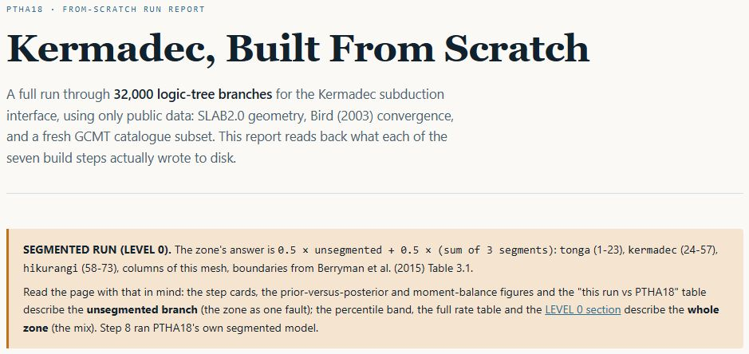
The whole topic, with both worked examples: Segmented vs unsegmented. Every file a segmented run adds: Options, files, columns.
The header and step 1
v12, --mesh-file: the SLAB card is replaced by STEP 1-2: Interface geometry from an external mesh (number of cells, area, depth range, mean dip of the file's mesh), the SLAB-product section is left out, and the comparison with PTHA18's mesh is labelled external mesh. What is new in v12.
Header. The zone's title, the number of logic-tree branches (32,000) and the data used: the SLAB product, Bird (2003) and a GCMT subset.
STEP 1 card. Which SLAB product was downloaded (SLAB2.0 here, chosen by PTHA18's naming rule) and how many contour levels step 1 kept (9: 0 to 40 km below the trench). v10_q: on folders generated with the trench ramp rule, a line under the card says how much of each trench end the rule trimmed (ramp rule).
From: logic_tree_summary.csv (branches), inputs/geometry/<zone>_slab2_contours.shp (contours). More: 1. Contours from SLAB.
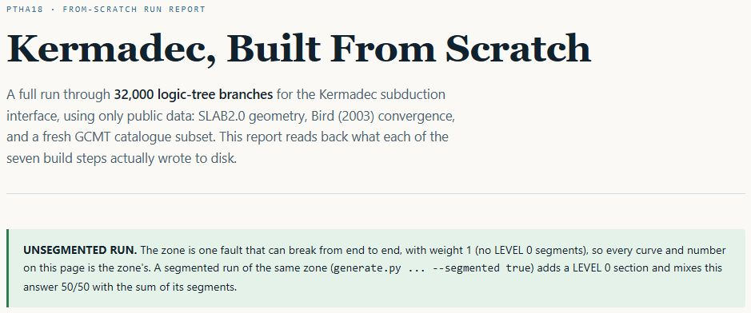
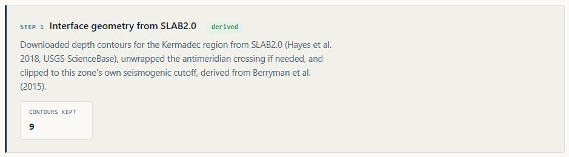
Step 2: the mesh
The numbers. Unit sources (219 = 73 columns x 3 rows) and the mean dip (15.42 deg), with PTHA18's mean dip (16.01 deg) when step 8 ran. The mean dip is an angle average, PTHA18's convention.
The amber box explains why an exact match with PTHA18 is not expected: PTHA18 meshed its own hand-edited contours.
The map is the mesh the engine really used, rebuilt from the input JSON with the engine's own function, so it includes any hand edit. Colour: depth of each cell below the trench.
What to look at: no folded or crossing cells, the top edge (lightest colour) along the trench, and ends that look square.
The depth profile below the map is drawn on every run, with or without step 8: the depth of each cell centre against latitude, one line per down-dip row. The span on the x axis is the stretch of arc this mesh covers; the spread between the lines is how much deeper each row sits. When step 8 has run, the same plot with PTHA18's series overlaid appears in the comparison card below.
A second amber box appears only if step 3's plate-boundary check found something: the mesh may run past the end of its own subduction zone onto the next one, in which case the columns it names are reading a different plate pair's convergence. It gives the jump in mm/yr, what the convergence would become without those columns, and the --auto-clip command that cuts them. Nothing has been trimmed: every number in the report still includes them.
From: logic_tree_summary.csv (mean_dip_deg_<zone>), outputs_official/logic_tree_summary.csv, the input JSON's geometry block. More: 2. The mesh.
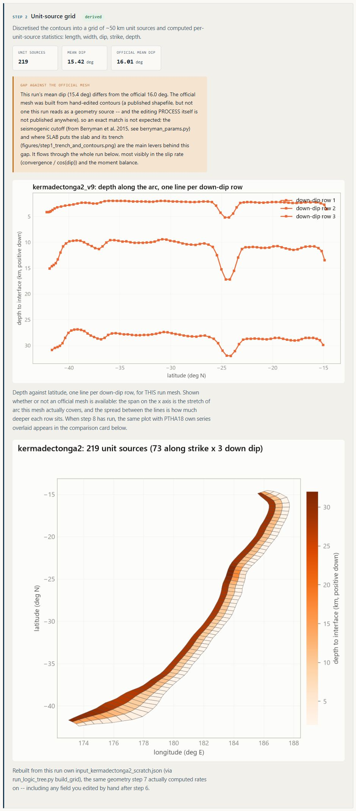
Official mesh, side by side (needs step 8)
Three figures from PTHA18's published cell table (unit_source_statistics_<zone>.nc):
- PTHA18's mesh alone (216 = 72 x 3), drawn from PTHA18's own published cell outlines (
validation/ptha18_reference/unit_source_grid/<zone>.shp): the mesh itself, not a reconstruction. Only a zone with no published shapefile falls back to rectangles rebuilt from each cell's centre, length, width and strike, where small gaps and ragged edges on a curved arc are a drawing effect. - Both meshes side by side, same extent and depth colours (blue PTHA18, orange this run): do they cover the same stretch of the plate?
- Depth along the arc: the depth of every cell centre against latitude, one line per row, both meshes. Where one mesh stops before the other, its lines stop.
Code: lib/plot_meshes.py (official_cell_polygons_best, fig_map_meshes, fig_profile_downdip; fig_profile_downdip_scratch for the always-on profile above).
downdip_number, alongstrike_number) and read out in the netCDF's own order. Checked on kurilsjapan, kermadectonga2 and puysegur2: cell centroids equal to the table's to 0.0000°.Show the card tall
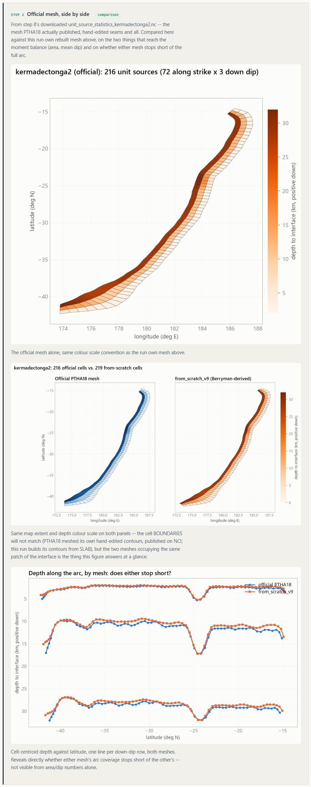
The mesh on a real map
A zoomable map (Leaflet) with Esri's ocean basemap, which shades the sea floor by depth. Orange: this run's cells, with its top edge thick. Pink: PTHA18's published cells (their exact outlines from NCI), with the top edge drawn as a wide, see-through band. The box at the top right switches to satellite imagery, hides the place names or either mesh.
What to look at: the thick top edge should run along the trench, the long dark groove of the sea floor. Where the two top edges agree, the orange line runs inside the pink band; on kermadectonga2 this run's lies a median 4 km seaward of PTHA18's (why).
How to move: drag; zoom with the buttons or a double click; the mouse wheel zooms after one click on the map (so that scrolling the page never gets stuck on it).
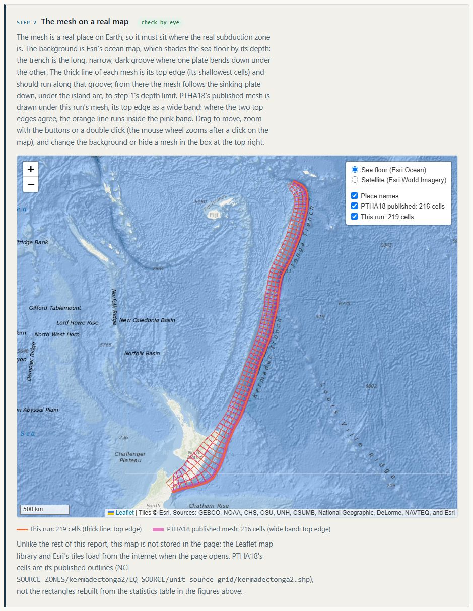
Step 3: the plate convergence
The numbers. This run's convergence (99.36 mm/yr, horizontal, from Bird's public catalogue) and PTHA18's (98.77, from step 8), with the difference. The text reminds that the engine divides the horizontal rate by cos(mean dip) once, to get slip along the fault.
The two maps. The convergent slip of every cell: first this run's mesh alone, then both meshes side by side on one colour scale, PTHA18's recomputed from its cell table with the same code. Every cell of a column has its column's value, because the match is made at the top edge of each column.
What to look at: a smooth change along the zone; columns of 0 where Bird's plate boundary diverges (the New Zealand end here).
From: data/convergence.txt, data/convergence_per_cell.npy, logic_tree_summary.csv (convergence_mm_per_yr_<zone>). More: 3. Plate convergence.
Show the card tall
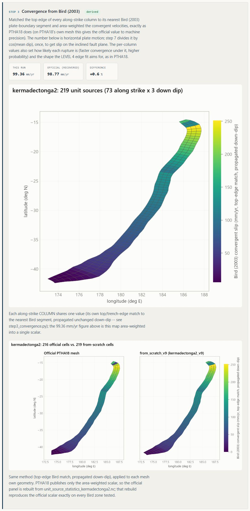
Steps 4 and 5: the earthquakes
STEP 4: how many earthquakes the worldwide GCMT catalogue has in the window 1976-01-01 to 2017-03-01 (PTHA18's).
STEP 5: how many of them pass PTHA18's rule for this zone (9 on kermadectonga2), with PTHA18's own count and window when step 8 ran, and a table of each event: date, Mw, depth, hypocentre and centroid. The green box confirms both runs use the same window, so the counts are comparable.
What to look at: the same count as PTHA18 where the meshes cover the same stretch; plausible dates and depths (none deeper than 71 km).
From: data/gcmt/gcmt_catalogue_1976_present.csv, data/gcmt/<zone>_gcmt_subset.csv, and for PTHA18's count outputs_official/ptha18_reference/official_gcmt.json (written by step 8). More: 4-5. Earthquake catalogue.
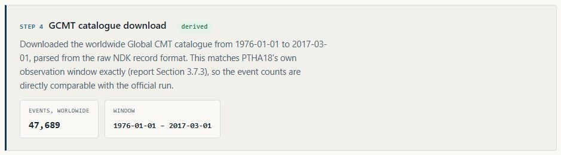
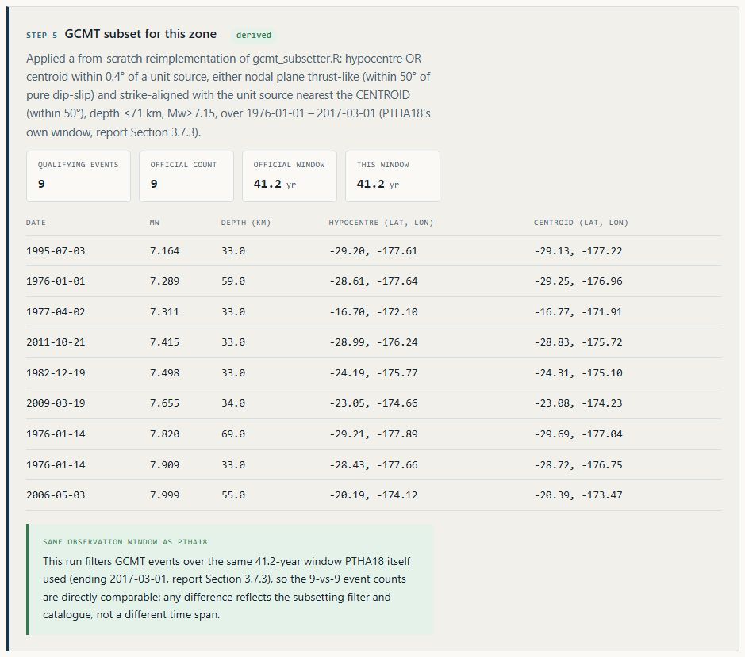
Step 6: the input file
The three literature values in the input file, all from Berryman et al. (2015) Table 3.1: coupling (minimum / preferred / maximum, 0.21 / 0.31 / 0.72, its "Hikurangi-Tonga-Kermadec Whole margin" row, as PTHA18 took it), the b-value range (0.7 / 0.95 / 1.2) and the largest observed magnitude (Mw 8.1, the larger of Berryman's rows and step 5's largest GCMT event, 8.0). Also the prior mean coupling (0.543) and the size of the tree: 20 coupling x 20 b x 40 Mw_max x 2 GR types.
Segmented run: the card still shows the zone's values. Each segment has its own coupling and Mw max observed, from its own Berryman row, shown in the LEVEL 0 table.
From: the input JSON's rates block and logic_tree_summary.csv (prior_mean_coupling_<zone>). More: 6. The input file.
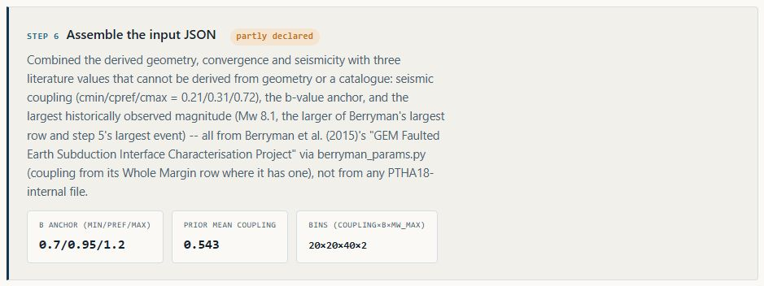
Step 7c (v11): variable shear modulus
The card explains rigidity in plain words, draws PTHA18's rigidity curve with this mesh's rows on it (each with the magnitude change of a rupture there), lists per row the depth, rigidity, magnitude shift and how much more (or less) a real earthquake there slips, plots the magnitude shift of the run's HS scenarios against their magnitude (median and 5-95% band), and compares the rates: constant rigidity, variable on the same magnitude scale, and variable counted by real magnitude.
What to look at: the ratio column (how much the LEVEL 3 weights moved: little without GCMT earthquakes), and the last column (rates by real magnitude, lower where the rate sits on the shallow rows). The green box says what it means for tsunami maps. In the rupture explorer every FAUS and VAUS line now ends with its magnitude with the variable rigidity.
From: scenario_rates_<zone>_variable_mu.csv, rate_curves_variable_mu.csv, variable_mu_deviation_<zone>.csv, logic_tree_summary_variable_mu.csv. More: What is new in v11.
Step 7: the logic tree, and the rupture explorer
The numbers. The 32,000 branches; the range of the Gutenberg-Richter a value over them (3.22 to 9.24); the LEVEL 4 edge multiplier (7.15); and the TVD (0.690), how much the observed earthquakes moved the branch weights (0 = not at all, 1 = completely). The green box compares it with PTHA18's update (0.679). On a segmented run these are the unsegmented branch's numbers.
The rupture explorer shows the scenarios themselves. Pick a magnitude, move the slider or press play: the highlighted block is one scenario, a rectangle of cells with uniform slip. The line under the controls says which one and its size, for example FAUS rupture 1 of 219: 1 along strike x 1 down dip, ... at Mw 7.2 (since 2026-10-06 also its area and slip; older reports show rupture 1 of 219 (1 along strike x 1 down dip)). On kermadectonga2 there are 3,075 scenarios from Mw 7.2 to 9.8.
v10 / v10_q: with --rupture-size local the block size changes from one placement to the next, and the line on the right gives each rupture its own size; the text above the explorer says when the run used it, and q (details).
v10_q: the Show menu picks FAUS, VAUS or FAUS + VAUS. FAUS cells are blue, VAUS cells amber, cells in both striped. The FAUS slider (and play) moves through the FAUS ruptures; the VAUS menu (1, 2, 3, ...) picks one of the VAUS realisations step 7b drew from that FAUS rupture (they carry no rate). The panel next to the map, Area / scaling relation, puts each rupture's area divided by the scaling relation's area on a log axis: 1 is the relation's area for that Mw, the shaded band its ±1σ range (Strasser: about 0.5 to 2). Small dots are every FAUS rupture of the Mw and every VAUS realisation of the FAUS rupture shown; large dots, with their value, are the ones on the map. Below it, Uniform slip, in metres shows the same ruptures as slip: the dashed line is the slip the median area gives, the red line PTHA18's peak-slip limit for HS and VAUS (7.5 times that slip; PTHA18 gives scenarios above it zero rate, since 2026-10-06 step 7b applies it too). VAUS dots outside the shaded band are expected: about 1 in 5 of PTHA18's own VAUS are (kermadectonga2), because VAUS samples the scatter of the scaling relation. Since 2026-10-06 one Panel menu picks area or slip, hollow dots are VAUS above the peak-slip limit (rate 0), and each VAUS line says what share of its FAUS rupture's rate it carries; step 7b applies the limit (rates). Each line gives the size in cells, the area in km² with its ratio to the scaling relation, and the uniform slip. Without step 7b only FAUS can be picked.
What to look at: bigger magnitudes cover more cells and have fewer placements; no placement leaves the mesh.
From: logic_tree_summary.csv; the explorer re-lists the scenarios with pyptha_v12/events.py on the same mesh (it works offline). More: 7. Logic tree and rates.
Show the card tall
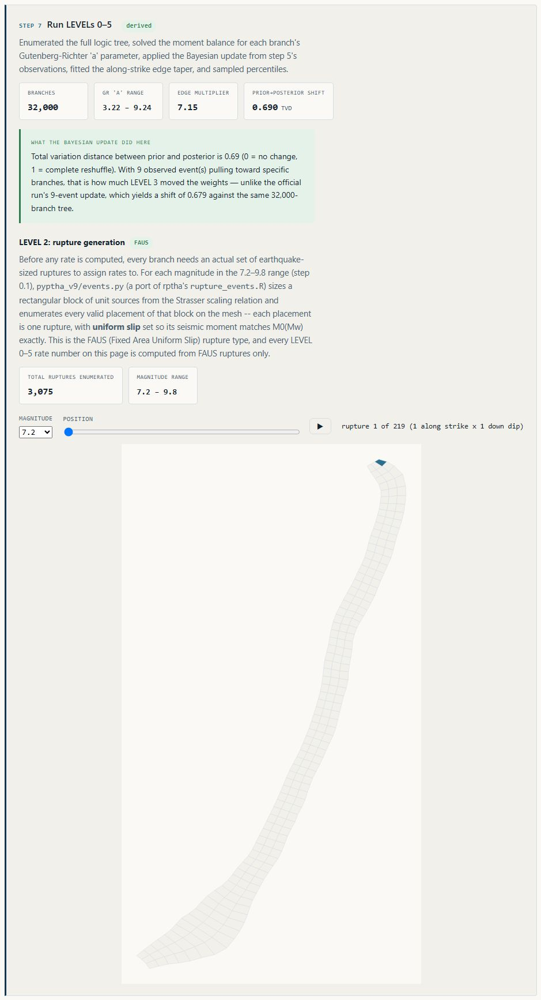
Step 7b: HS and VAUS (only if it ran)
One table per magnitude with the number of heterogeneous-slip (HS) fields and their mean and maximum peak slip; then, when PTHA18's catalogues are available, the statistical comparison with PTHA18's published HS fields (count, mean peak slip, cells with slip, concentration, spectral distance); then the same for VAUS. None of it changes a rate. If step 7b did not run, the card says so. More: 7b. HS and VAUS slip.
Show the card very tall
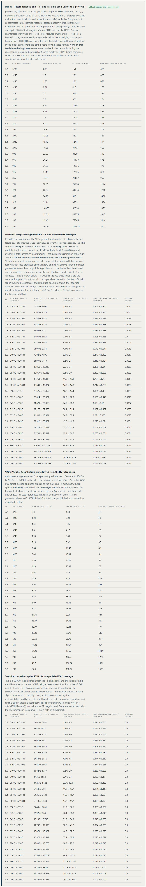
The exceedance-rate curve
The main result. For each magnitude on the horizontal axis, how many earthquakes of that magnitude or larger are expected per year on the zone (logarithmic scale). Dark line: this run's mean over the 32,000 branches; dashed orange: PTHA18's official run; band: 16th to 84th percentile of the branches, the uncertainty of the logic tree.
Reading it: 0.225 per year at Mw 7.2 means one such earthquake every 4.4 years on average; 0.00285 at Mw 9.0, one every 350 years. The curve falls to 0 near Mw 9.6, the largest Mw_max of the tree. The band is computed every 0.1 of Mw and drawn up to the last magnitude where its upper edge (84th percentile) is still above zero. Its lower edge drops to the bottom of the chart wherever the 16th percentile is zero, that is, where more than 16% of the branches do not allow an earthquake that large (each branch has its own Mw_max). Move the mouse over the curves to read values. Under every chart a row of buttons, one per curve (the band included), hides or shows that curve with a click, so overlapping curves can be read one at a time.
From: outputs/rate_curves.csv, outputs/exceedance_rate_percentiles.csv, outputs_official/rate_curves.csv. More: LEVEL 5.
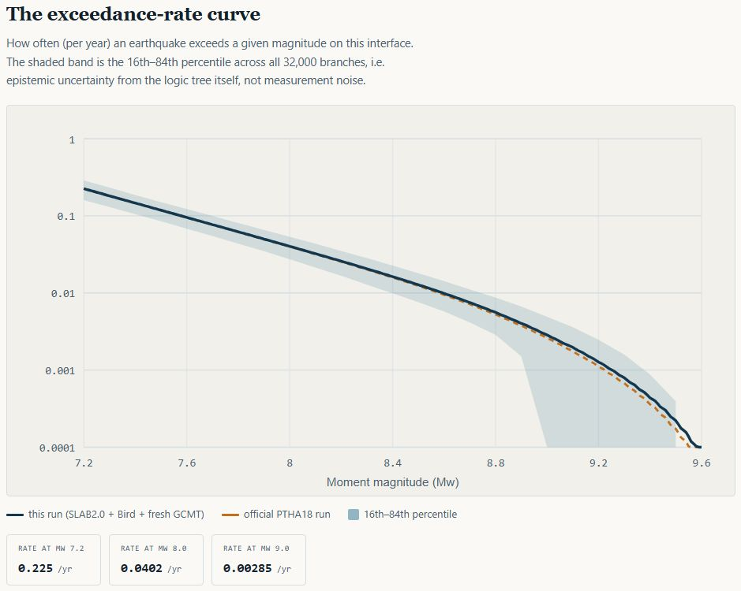
The same chart on a segmented run
Three more series: each segment (thin dotted), their union (dashed) and the zone's answer, the LEVEL 0 mix (fine dotted, close to the solid line). The solid line is still the unsegmented branch, and PTHA18's dashed line is PTHA18's unsegmented branch, so those two compare like with like.
The band changes meaning. exceedance_rate_percentiles.csv of a segmented run holds the whole zone's percentiles, drawn as PTHA18 does by sampling the unsegmented branch and the segments together, so the band belongs to the mix line. The note above the chart says so.
What to look at: the segments sit well below the zone (each is a part of it); the union rises above the solid line at small magnitudes and falls below it near the top; the mix lies halfway between the solid line and the union. The numbers are in the LEVEL 0 section below.
From: kermadectonga2_v9seg/outputs/rate_curves.csv, columns exceedance_rate_<zone>_<segment>, exceedance_rate_union_of_segments, exceedance_rate_source_zone.
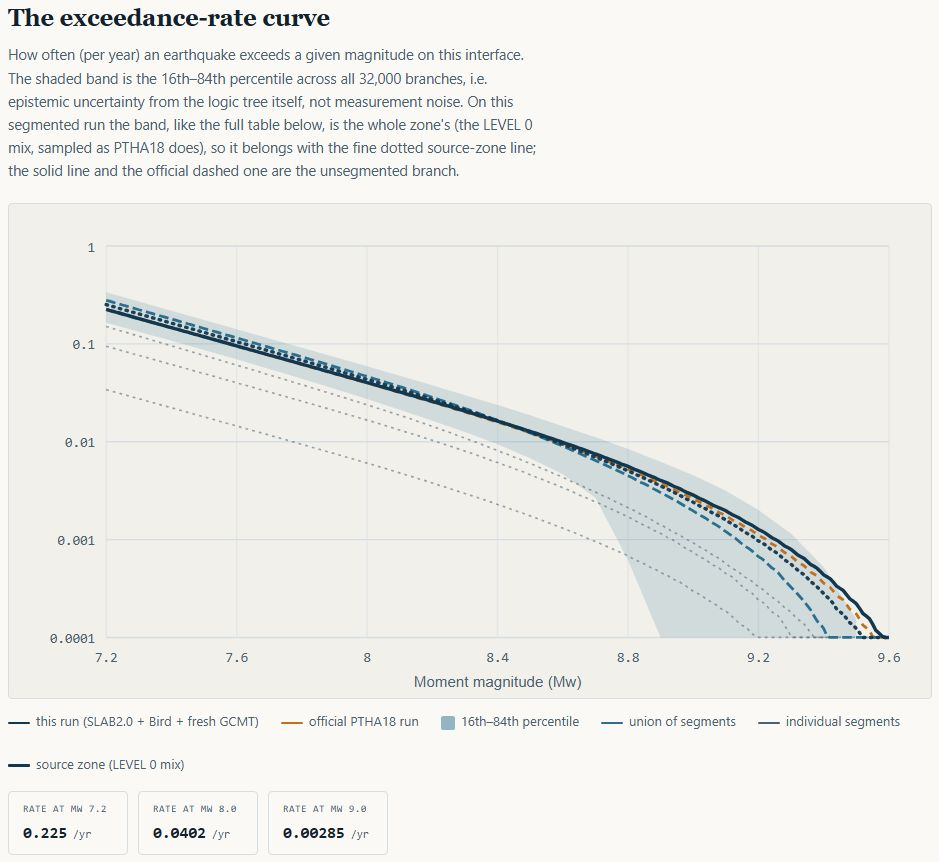
LEVEL 0: segmentation (only on a segmented run)
Only appears with --segmented true. An unsegmented run has no LEVEL 0 section: its page has the same blocks as v8's report (the numbers are not v8's on zones whose Berryman values v9 changed, see the input file).
How the zone is divided comes first: a bar per model (this run, and PTHA18 when step 8 ran) showing its segments along the trench on a common 0-100% scale, and a map of the mesh cells coloured by segment, PTHA18's mesh beside this run's (figures/segments_map.png). The colours are the same in the bar, the map and the tables.
What it shows next. Where the boundaries came from: Berryman et al. (2015) Table 3.1's segment end points (Bird's plate pairs with --segment-boundaries bird), with no PTHA18 file read. Then one row per segment (its plate pair, its columns, its own convergence, coupling, Mw max observed, how many earthquakes PTHA18's selection rule picks on its own cells, its own rate at Mw 7.2). An event near a boundary counts in both neighbours, as in PTHA18, so the counts can add up to more than the zone's.
PTHA18's own segments (when step 8 ran): the same table for PTHA18's segmentation, then this run against PTHA18 for all three curves (unsegmented, union of segments, the mix) at six magnitudes, and a chart of every segment, union and mix of both models. Step 8 builds this official segmented run only for a segmented example; it reproduces PTHA18's segment trees exactly (check 5).
The table that matters is "What segmenting changed": the unsegmented branch, the union of segments, the percentage difference, and the 50/50 mixture that is the zone's actual answer. On the kermadectonga2 example (kermadectonga2_v9seg, Berryman's three segments) the union is +24% at Mw 7.2 and -47% at Mw 9.2, crossing over near Mw 8.5; PTHA18's own three segments give +31% and -50%, crossing at about the same magnitude. That crossover is the physical content of LEVEL 0: several shorter faults produce more moderate earthquakes than one long one, but none of them is long enough to host the largest ruptures.
On the curve above, a segmented run adds three series: the individual segments (thin dotted), their union (dashed), and the source-zone mixture (fine dotted, over the solid unsegmented line).
The last column is the zone's answer: on kermadectonga2_v9seg the mix is 0.2521 per year at Mw 7.2 against 0.2251 unsegmented (+12%) and 0.000968 at Mw 9.2 against 0.00127 (-24%). PTHA18's own segmented mix moves by about the same (+15% and -25%).
From: outputs/rate_curves.csv (columns exceedance_rate_union_of_segments and exceedance_rate_source_zone), outputs/segmentation.csv, outputs/logic_tree_summary.csv (the per-segment rows), data/gcmt/segments.json, the segments block of the input JSON, and for PTHA18 outputs_official/ with ptha18_reference/official_segments.json. More: Segmented vs unsegmented, LEVEL 0 in the engine.
The five blocks of the section, from kermadectonga2_v9seg/report.html:
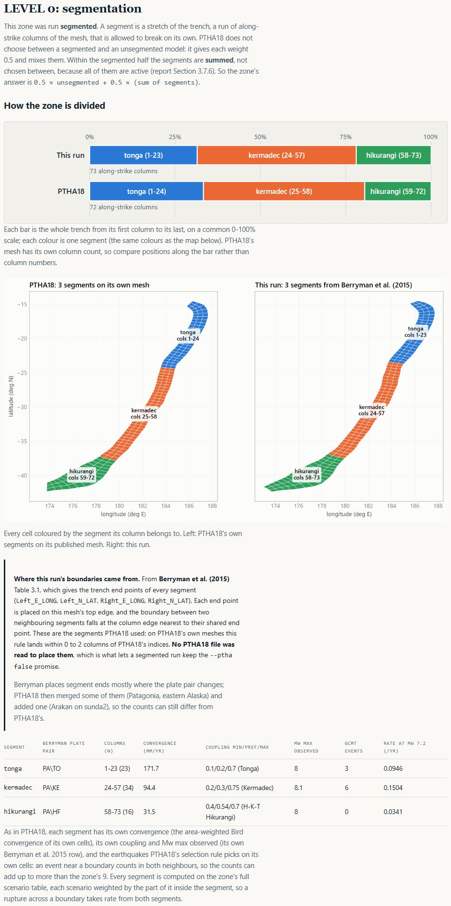
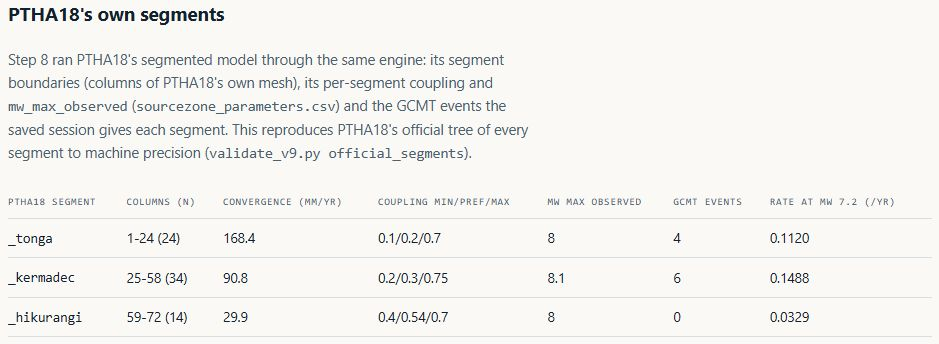
sourcezone_parameters.csv) and the saved session's events per segment.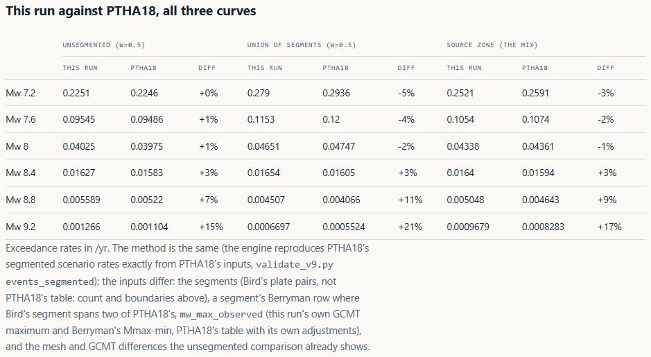
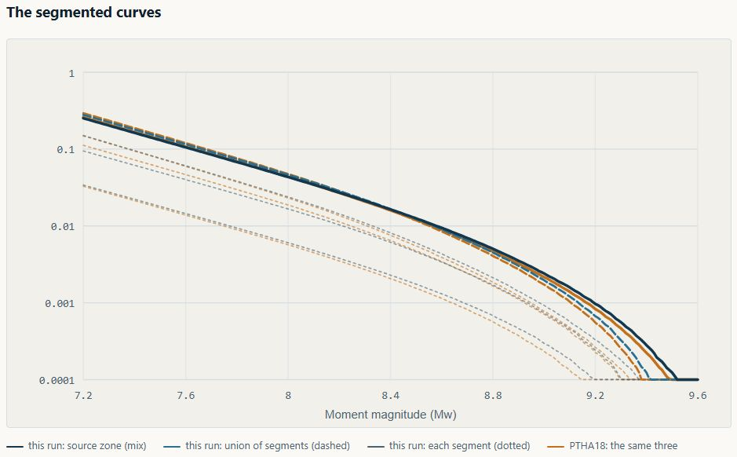
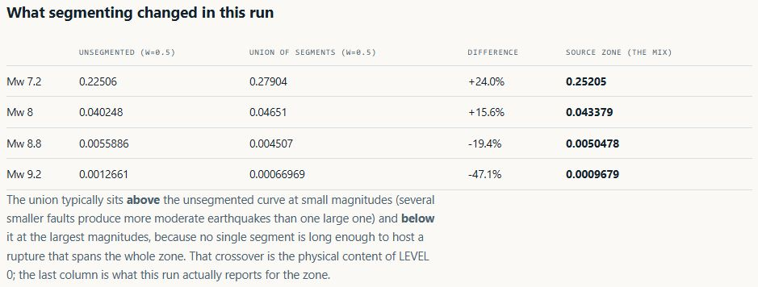
Prior versus posterior
The engine's own figure. Every grey line is one branch's curve. Left: before the update, with the prior mean (red). Right: after the update with the observed earthquakes (green steps: the observed rate above each magnitude), with the posterior mean, median and percentiles. The branches that agree with the observations get more weight. The second figure is the same for the official run.
What to look at: the posterior curves pass through the green observations; a large TVD means the observations changed the weights a lot.
Segmented run: the figure is the unsegmented branch's. Each segment has its own update against its own events, in outputs/figures/fig_branch_fan_<zone>_<segment>.png.
From: outputs/figures/fig_branch_fan_<zone>.png. More: LEVEL 3.
Show the section tall
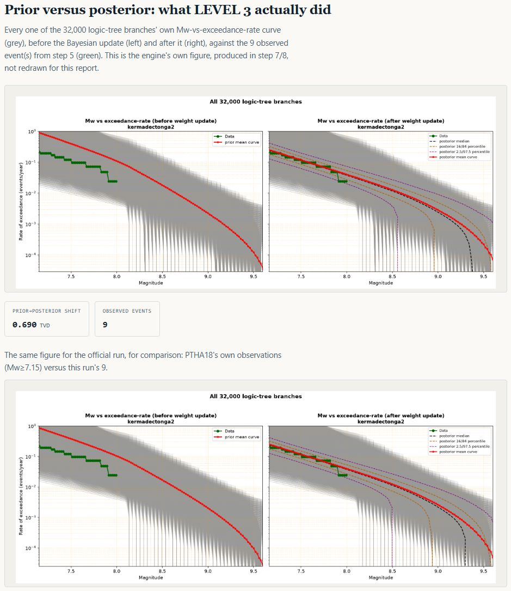
The moment-balance check (LEVEL 4)
Along the zone, column by column: the shape of the plate convergence (blue, the target), and the shape of the slip released by all scenarios together, without (grey dashed) and with (orange) the edge correction. All three are normalised to the same total, because only shapes are compared.
Reading it: near the ends fewer scenarios overlap, so the grey curve sags there; the edge multiplier (7.15) lifts the ends so that the orange curve follows the blue one as well as a single number allows. The blue curve is Bird's convergent rate of each column (high at Tonga, about 6 mm/yr at the New Zealand end); on a zone with a constant convergence it is flat.
Segmented run: the figure is the unsegmented branch's. A segment does not fit its own multiplier, it inherits the zone's (as in PTHA18); its own check is fig_moment_balance_<zone>_<segment>.png, where the target is the convergence shape inside the segment.
From: outputs/integrated_slip_<zone>.csv (columns target_convergence_shape, integrated_slip_no_edge_correction, integrated_slip). More: LEVEL 4.
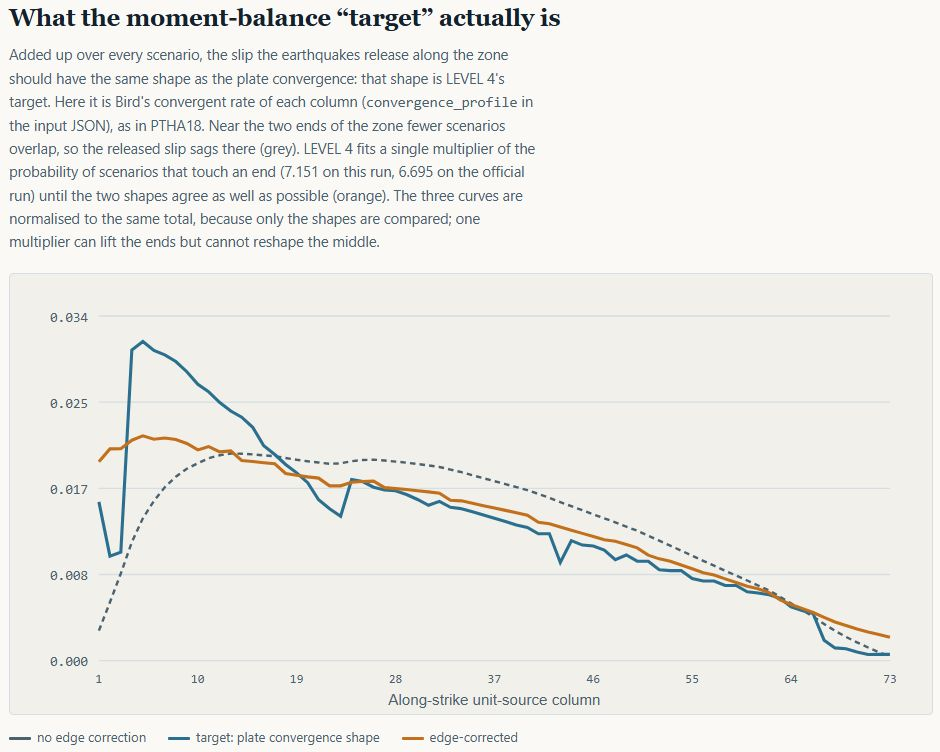
The full table, the SLAB product, and this run vs PTHA18
Exceedance rate by magnitude. The mean rate at every magnitude where percentiles are computed (every 0.1 from 7.2; the rows stop where the rate is zero in both runs), this run and the official run, with the difference. On a segmented run both columns are the zone mix (this run's segments against PTHA18's segmented run), not the unsegmented branch; the note above the table says so.
Which SLAB product. PTHA18's rule (a zone name ending in 2 used SLAB2.0) with the quotation from its report, and what it means for this zone.
This run vs the official PTHA18 run (needs step 8). Mean dip, convergence, edge multiplier, TVD and the rate at Mw 7.2, both runs, and an amber box. When the rates differ by 1% or more, the box names the input that most likely explains the gap: the one with the largest relative difference among mean dip, convergence and edge multiplier. When they agree within 1% it says so, and only names the largest input difference. On kermadectonga2 the rates agree to +0.2%; the largest input difference is the edge multiplier (+6.8%), which depends on where the column boundaries fall. On a segmented run the rate row is labelled "(unsegmented branch)"; the segmented comparison is in the LEVEL 0 section.
From: outputs/exceedance_rate_percentiles.csv, both logic_tree_summary.csv. More: 8. The official PTHA18 run.
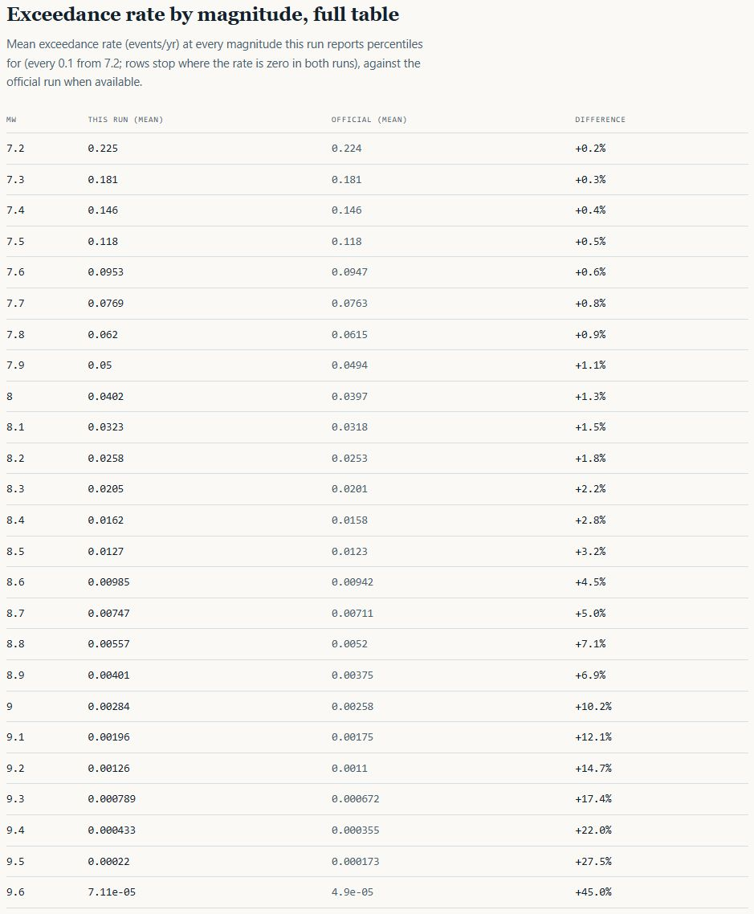
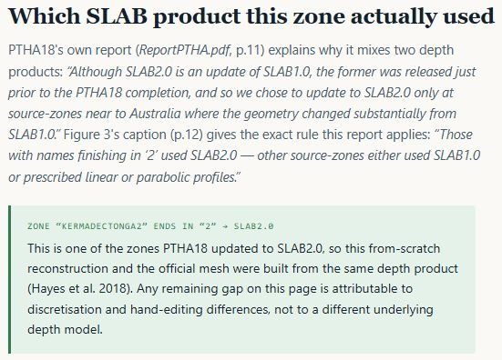
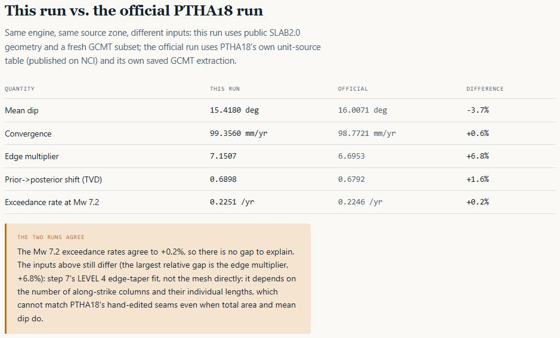
The numbers behind the page (outputs/exports/)
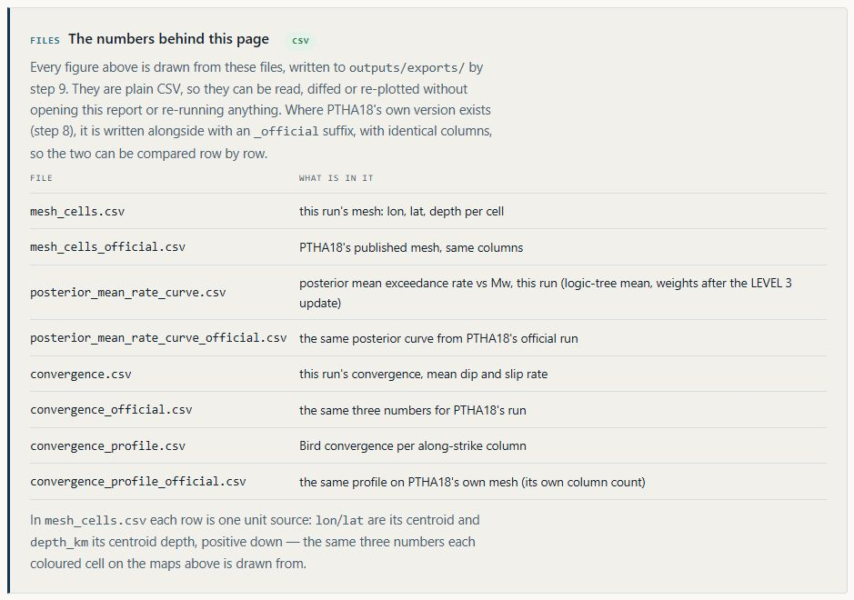
The FILES card, after the step cards, lists the CSV files step 9 writes next to it. Every figure above is drawn from them, so the numbers can be read, diffed or re-plotted without opening the HTML or re-running anything. Where step 8 supplied PTHA18's own version, it is written alongside with an _official suffix and identical columns, so the pair can be compared row by row.
| file | columns | what it is |
|---|---|---|
mesh_cells.csv | downdip_number, alongstrike_number, lon, lat, depth_km, convergent_slip_mm_per_yr | one row per unit source: lon/lat are the cell centroid and depth_km its centroid depth, positive down: the three numbers each coloured cell on the maps is drawn from |
mesh_cells_official.csv | the same | PTHA18's published mesh. Checked against its netCDF table: positions equal to 0.000000° |
posterior_mean_rate_curve.csv | Mw, exceedance_rate_unsegmented | the line on the chart: the logic-tree mean taken with the weights after the LEVEL 3 Bayesian update against the observed events. That is what "posterior" in the name means, and the prior-vs-posterior TVD is how far the update moved them |
posterior_mean_rate_curve_official.csv | the same | the same curve from PTHA18's official run, posterior in the same sense, since step 8 runs PTHA18's own input through this same engine |
convergence.csv | item, value, units | three rows: convergence_horizontal, mean_dip and slip_rate (convergence / cos dip) |
convergence_official.csv | the same | the same three numbers for PTHA18's run |
convergence_profile.csv | alongstrike_number, div_mm_per_yr, convergent_slip_mm_per_yr, distance_to_bird_km | the per-column Bird profile the zone scalar is the area-weighted mean of |
convergence_profile_official.csv | the same | the same profile on PTHA18's own mesh, computed by step 8 with the same code and PTHA18's own Bird table |
| A segmented run changes three of them and adds two: | ||
mesh_cells.csv, convergence_profile.csv | + segment | the segment each cell's (or column's) along-strike column belongs to, for example tonga. The _official twins have no such column (PTHA18's segments are in ptha18_reference/official_segments.json) |
posterior_mean_rate_curve.csv (and _official) | + exceedance_rate_<zone>_<segment> ..., exceedance_rate_union_of_segments, exceedance_rate_source_zone | every curve of the chart. Each model has its own segment columns (both _tonga, _kermadec, _hikurangi on kermadectonga2; with --segment-boundaries bird this run's are named after Bird's plate pairs, _to_pa, _ke_pa) |
scenario_rates_source_zone.csv | event_id, Mw, area_km2, slip_m, mean_depth_km, rate_mean, rate_p0.025 ... rate_p0.975 | new: the rate of every scenario for the whole segmented zone, 0.5 x unsegmented + 0.5 x every segment it touches, with PTHA18's partial-segmentation percentiles. The file a hazard calculation would use |
scenario_rates_source_zone_official.csv | the same | the same from PTHA18's segmented run (only with step 8) |
_official pair can be read row by row. These two cannot: each profile has one row per along-strike column of its own mesh, and the two meshes rarely have the same column count (kurilsjapan: 60 here against PTHA18's 61). Compare them as two profiles along the arc, not row against row.Written by templates/step9_report.py.tmpl; the mesh writer is lib/plot_meshes.py write_mesh_csv(). The _official files appear only when step 8 has run.